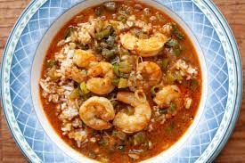

Etouffee

Ingredients
- Butter
- Flour
- Holy Trinity (pepper, onions, celery)
- Shrimp
- Chicken Broth
Cooking Instructions
- Make roux using butter and flour. Cook until brown
- Add in holy trinity and cook for 5 min
- Add in chicken broth and cajun seasoning
- Cook shrimp in the stew until fully cooked
- Remove from heat and serve over rice